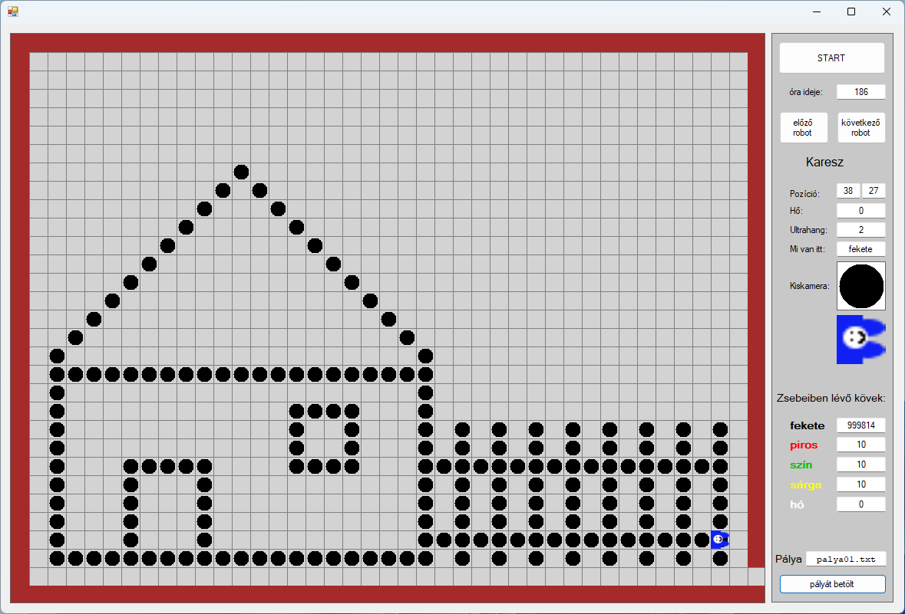
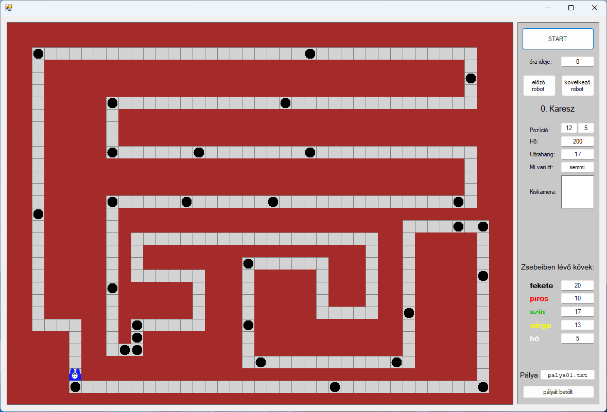
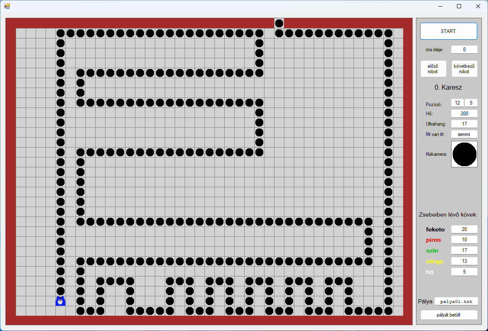

A LogoKaresz témakörrel párhuzamosan egy másik Karesz, a robot szoftverrel is foglalkoztunk, amely az Objektum Orientált Programozás (OOP) alapjaira vezeti rá a tanulókat. Ez a program az eredeti Karesz koncepciójának leginkább megfelelő oktatási eszköz. Ebben a környezetben egy négyzethálós pályán kell irányítani Kareszt, vagy akár több Kareszt is, különböző feladatok megoldása érdekében.
A pályák sokszínűek és kihívásokkal teli akadályokat tartalmaznak, mint például labirintusok, vonalkövetés és mozgatható színes kavicsok. Karesz különböző érzékelőkkel van felszerelve, amelyek lehetővé teszik számára, hogy észlelje és interakcióba lépjen a környezetével, és így megoldja a megadott feladatokat. Ezek az érzékelők segítenek navigálni a bonyolult pályákon, elkerülni az akadályokat, és megfelelően reagálni a környezeti változásokra.
A program használata során a tanulók megtanulják az objektumorientált szemléletmód alapjait, például az objektumok és osztályok közötti kapcsolatokat, az öröklődést, és a polimorfizmust. A gyakorlati feladatok révén a diákok mélyebb megértést nyernek az OOP koncepcióiról, miközben fejlesztik problémamegoldó készségeiket és algoritmikus gondolkodásukat. Az ilyen típusú feladatok különösen fontosak a programozás alapjainak elsajátításában, mivel elősegítik a logikus gondolkodás és a strukturált kódolás képességét.
